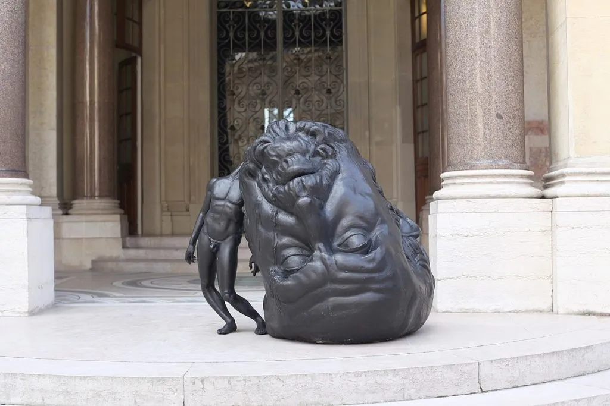

My Research

This feeling can be compared to how pressure works in real life, outside of metaphorical views; it can destroy even the hardest of diamonds. It can be represented by more somber, or cooler colors, like a deep blue, or perhaps violet, clocks, and chains.
In the case of historical contexts, pressure can be best represented by decisions that need to be made by high ranking officials during High-Stakes military operations, like the decision to invade Normandy in 1944, despite the less than ideal weather at the time.
For an example of how pressure has been referenced in art, a sculpture created by Thomas Lerooy, dubbed “The Weight of Thoughts,” showcasing the burden of overthinking due to all kinds of external pressures, such as work, relationships, and just the mental burnout of having to be thinking all the time, and just being overwhelmed by all of it. The sculpture itself shows us a muscular human body that is struggling to support its enormous head, slumped over to the side, symbolizing that even the physically strongest of bodies simply cannot withhold overwhelming pressure.
The vocab words that I have chosen to pair with pressure are: Tension, Compression, Stress, Strain, Burden, Drain, Force